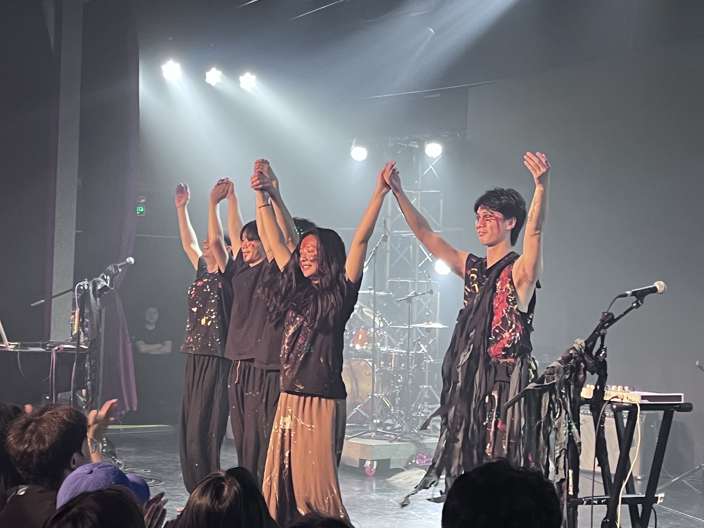
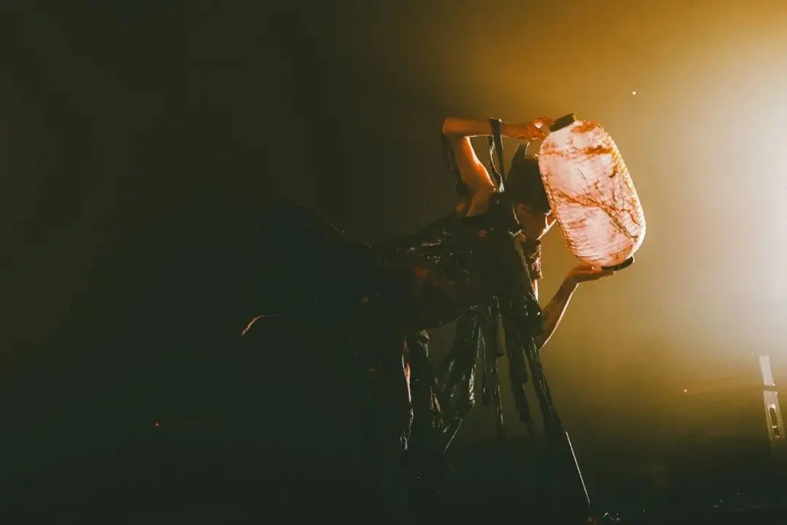
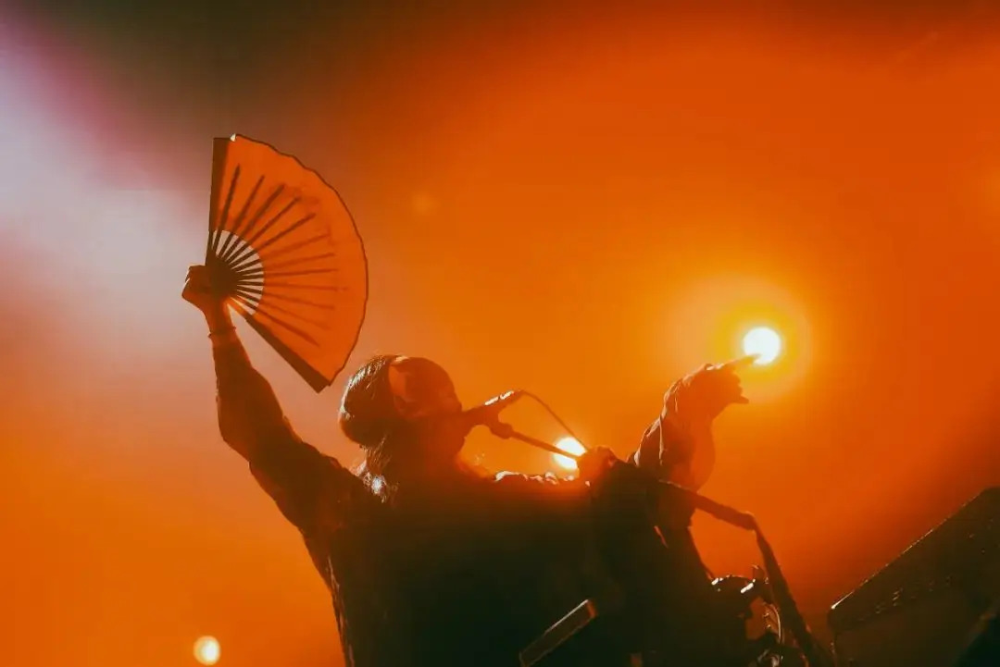

2024 年第二季度总结
这里记录下第二季度自己的一些想法，为了日后翻阅方便！
- 四月
- 为什么没有更多的人使用 Linux 呢？
- 景德镇文艺复兴之无穷岛
- 五月
- 有答案不等于解决问题
- 凯恩斯主义
- 六月
- 史特金定律
- 硬心肠
四月
景德镇文艺复兴乐队
景德镇文艺复兴乐队是一支来自中国江西省景德镇的独立音乐团体，以其独特的音乐风格和文化背景获得了关注。乐队的名称来源于他们共同创办的文艺复兴 LiveHouse，这是一个成为景德镇原创音乐文化地标性交流平台的地方，乐队也因此自然而然地产生，并命名为景德镇文艺复兴乐队。

一 为什么没有更多的人使用 Linux 呢？
选择它不是因为容易，而是因为它值得！
几周前，我看到一条推文问道：”如果 Linux 这么好，为什么没有更多的人使用它”？这个问题听上去很有道理。你们都说 Linux 好，它甚至是免费的，那为什么没有大规模采用呢？但是，如果你仔细想一想，就会发现生活中到处是这样的情况。
如果锻炼如此有益健康，为什么没有更多的人去做呢？如果阅读如此有教育意义，为什么没有更多的人这样做呢？如果垃圾食品对你如此有害，为什么还有那么多人吃它？世界上充满了值得尝试的事情和事物，但大多数时候却被大多数人忽视。现实世界的真实情况是，变得肥胖和无知要比保持健康和学习更容易。
大多数人总是选择最容易、最不需要努力的事情。Linux 就不容易，比微软和苹果的商业产品对使用者的要求更高。为了用好它，你需要学习一些东西，还要自己尝试解决问题。程序员不一样，对于他们，深入了解计算机是工作必需。这就是为什么程序员往往使用 Linux，也应该使用 Linux 的原因。Linux 就跟生活中很多其他事情一样，选择它不是因为容易，而是因为它值得。
二 景德镇文艺复兴之无穷岛
《无穷岛》开启！
没上班的这几个月，除了旅游之外，听了、看了很多小的 LiveHouse 演出，比如 Fayzz、缺省、PK14 等等。其中，最令我印象深刻的是 景德镇文艺复兴 的演出，还是和去年一样棒。真的是，每次看都有惊喜！
《无穷岛》是景德镇文艺复兴第四个舞台作品，作为此前《水码头》的故事延续，是继《云难》后有一个很厉害的舞台体验。赣东北乡土文化艺术团的土法炼钢，还是很结实的。
书接上回，前作《水码头》故事回顾：一个名叫大脚的年轻人，在追赶太阳的过程中，被一条大河拦住了去路。正当他踌躇无法过河之时，河上游来一只巨大的蛤蟆。大脚原本以为蛤蟆可以载他过河，可蛤蟆说我没有这个法力。但这个河里住着一个名为鳝神的神仙，你只要把你带的一把米撒到河中，就能召唤他出来，他一定能帮助你渡过这条河。
大脚撒了一把米在河中，果然河中升腾出一个巨大的如蛇一般的神物，这和大脚原本想的有些不同。为了过河，大脚还是请求鳝神帮助。鳝神说，你过河不就是为了追赶太阳，寻找光明吗，那只要把你带的米全部都撒到河中献给我，我就让你得偿所愿。大脚虽有些犹豫，但还是把自己身上带的米全部都撒到河中。
果真，鳝神张开了他的大嘴，他的口有天地般广阔，从鳝神的喉咙中射出了万丈光芒。大脚看到了自己想要的光，于是跳到了鳝神的口中。鳝神把嘴闭上，悄无声息地游回了河里。鳝神吞噬大脚，并不是为了要把他吃掉，而是带到一个叫无穷岛的地方，开启无穷无尽地生活 ……
在无穷岛上，大脚看到曾在水码头指引他召唤出鳝神的巨蛤从水中退出，才看清它其实只有三足。更令大脚诧异的是，一道刀光闪过，巨蛤竟然生出了第四只脚。随后，巨蛤不断地吐出小蛤蟆，而自己的体型也逐渐缩小，直至满地的蛤蟆，而原本的巨蛤已消失无踪。大脚方才明白，他所看到的巨蛤是存在于一个与自己逆向倒流的时光中，而刚才所见的事物需要反向去理解。
无穷岛上，原本有无数的蛤蟆，它们有一种强迫症，需要依靠吞食同类让身体无止境地生长。当大量的蛤蟆凝聚成一只巨蛤后，水里游不深，岸上也跑不快，而且巨大的体型和奇怪的形态让人无法亲近甚至产生恐惧之心。于是，巨蛤会挥刀砍断一条腿，再将铜板披在身上，化身成三脚金蟾，以谦和的模样以及传播自己能招财进宝的妄念来到人世间，接受膜拜。这就是三脚金蟾真正的诞生。
无穷岛上光怪陆离 无穷无尽的异象，大脚即将迎来新生。大脚在无穷岛上身体形态逐渐变化，最终一双大脚消失，成为鳝的模样。原来，鳝神就是由自己蜕化而成。鳝神的两端都是鳝头，这样的双头形态让鳝神有着奇怪的生存方式。在每日之始， 两头互相争斗，胜的一方则当日可作为鳝首，另一端则为鳝尾。而鳝首可如饕餮般尽享美食，鳝尾需作为排泄器官履行功能。日月长久，循环往复。
鳝神再回到水码头，这次从水中鳝神的视角，看到了岸边的枯树下有位长着一双大手的年轻人在等待渡河，而鳝神要做的，就是让她跳入自己口中然后带回无穷岛。大手也将在无穷岛经历本专辑中同样的故事后，蜕化成鳝神，去往下一个水码头，在那里，等待着大脚向河中洒出携带的米召唤自己的出现。
整个无穷岛，如同一个莫比乌斯环，正向逆向的时空交叠的幻象，循环往复地上演着大脚（手）与鳝神的故事，无穷无尽！
五月
钟表
钟表店里摆满了各种各样的钟表，每一个的时间都不一样。顾客问，怎么商品的时间不对也不调？店主说，我这里每一个钟表呀！在世界上都有一个属于它的角落，它的时间是对的！—— 卡瓦邦噶

一 有答案不等于解决问题
多思考，多积累，提升自己的硬实力 —— 《得到》
很多时候，那些不费太多力气就能想到的所谓的“好答案”，很可能只不过是别人早就考虑过的、淘汰掉的答案。那些那么多人都没有想出答案的问题，不太可能存在灵机一动的答案。
在现实中，每一个细节问题都可能不得不安排一个专门的职位去解决，那些通过一些小手段就能解决的问题，常常只存在于很简单的工作中。
我和我弟弟也谈过类似的问题，他现在在做半导体芯片设计。他和我讲，假如做出一款在市场上能够取得成功的半导体芯片要走100步，那你其实走到第10步就能做出样片了，很多人到这里就觉得看到了胜利的曙光，但其实还差得远，接下来遇到的问题可能比想象中的多10倍。
从他们的话中我想到一点：真实世界的复杂性要比大多数人想象中的高很多。很多人的努力，只是在前100个问题里转圈，当他们解决了100个问题后还没有成功，就转而去做另一件事了，结果就是总在成功的围墙外兜圈子。
今天有很多地方都会讲一些所谓的应聘技巧。应聘技巧确实是有作用的，但它的作用是在实力的基础上锦上添花。用人单位录用一个员工，最关键的因素其实只有一个——实力。没有实力，学会再多的应聘技巧也是白费。
人有了实力，缺套衣服，那是很容易补上的。可是有再多套衣服，而没有实力，却无法弥补。这里讲的实力，可不只是学校中简单地解决纸面问题的能力。你想啊，考试的时间也就一两个小时，能够在一场考试中解答出来的问题能有多难呢？在工作中我们遇到的实际问题，有多少是一两个小时就能解决的？
二 凯恩斯主义
凯恩斯主义并不是万能的，但是目前每个国家都在极力使用。
凯恩斯主义是一种经济学理论，主要基于英国经济学家约翰·梅纳德·凯恩斯（John Maynard Keynes）的思想。凯恩斯主义主张政府在经济活动中发挥积极作用，特别是在经济萧条期间通过财政政策和货币政策来刺激经济增长。
凯恩斯主义提供了一种理解和管理宏观经济活动的框架，强调政府在经济稳定和发展中的积极作用。尽管凯恩斯主义也受到了一些批评，比如过度依赖政府干预可能导致的效率低下和债务累积问题，但它仍然是现代宏观经济学的重要组成部分，并在实践中被广泛应用于应对经济周期波动和促进经济增长。
六月
讲不出再见
朋友说，人生的至痛是要用一生来经受的，以后你吃饭、喝水、出门走路，无论做什么都会想起他，那才是你漫长痛苦的开始。跑步的时候在跑步机上哭，吃饭的时候眼泪滴在饭碗里，走路的时候心里会自然地跟他对话，遇到不怎么难过的事时也会因为想到他而哭得无法收场。这世间最深的情和爱，都是要用眼泪来还的。

一 史特金定律
找到自己心中的史特金定律 —— 《清醒思考的策略》
史特金定律 是由美国科幻作家西奥多·斯特金提出的一个经验法则。这个定律通常表述为：“90% 的任何东西都是垃圾”。斯特金最初是在谈论科幻文学时提出了这个观点，他认为即便是在科幻小说中，也有大量的作品质量不高，但同样也有高质量的作品存在。不仅限于科幻小说，这个定律也可以用于描述其他文学流派、电影、音乐等领域。在网络内容创作中，大量的博客文章、社交媒体帖子等可能是平庸甚至无价值的，但也有一部分内容是高质量和有价值的。
第一次听到史特金定律的时候，我的内心便轻松了很多。我之前一直坚信，人们拿得出手的成果，绝大多数都是重要的、经过深思熟虑的，并且有价值的。由于心怀这种信念长大，所以每当有什么不合心意的东西出现在我身边时，我都会从自己身上找原因。今天我明白了：如果一部戏剧在我眼中是一场彻头彻尾的失败，那并非因为我缺乏修养；如果在一场官方宴会中90%的人都让我觉得无聊，那也并非因为我缺乏博爱之心。
那些将史特金定律记在心里的人，肯定会过得更开心，因为史特金定律是一件卓越的思维工具，它会“允许”你将看到和听到的绝大多数内容都放在一边，而不会有愧疚的心理。这个世界就好比一个被空话充斥的会场，而你不必用心去听。请不要尝试着将世界从这些没有价值的元素中净化出来，你办不到。所以，请对自己的选择加以限制，仅仅选择那些少数有价值的东西，而将其他的都放在一边。
史特金定律不仅对外部世界有效，它同样适用于我们的内心世界。以我为例：我心中 90% 的主意都是毫无用处的，90% 的感觉都是毫无道理的，90% 的愿望都是毫无意义的。正因为对这一点心知肚明，所以我会十分谨慎地思考，自己应当对哪些来自个人的“精神产品”加以重视，对哪些则应当一笑而过。
不要抓住别人给你提供的每一件垃圾不放；不要在自己刚刚对一件事产生兴趣的时候，便去追逐自己的欲念；不要因为某些设备或应用的存在而去不断尝试。因为只有极少一部分内容才是有价值的、一流的、重要的。史特金定律会帮你节省大量的时间，并能让你避免很多愤怒情绪。请认清主意和好主意、产品和好产品、投资和优质投资之间的差别，请认清垃圾的真面孔。对了，还有一个小窍门想介绍给你，这条法则在我的印象中总能应验：如果你不能确定一个东西是不是垃圾，那它大概率就是垃圾。
二 硬心肠
最折损人生的就是摇摆不定 —— 《硬心肠》
从前有一本畅销书叫《只有偏执狂才能生存》，每每回想起来，都觉得这句话是至理名言。
硬起心肠，一条道走到黑，看起来虽然破绽百出，但就像一支羽箭的箭头，凝聚了所有的力。这一条道，就是你性格和品行里最突出的那一点，你所做的一切，都应该将它发扬光大。最折损人生的就是摇摆不定，你总是没什么主意，别人说什么你都觉得确实有可取之处。
我把这种摇摆称为黎明前的黑暗。因为人在做决定之前，心总是最软的：我不能确定怎样做才是对的——好脾气、受内伤的我和坏脾气、得罪人的我，哪一种更值得拥有？我想拥有一些不兼容的东西——既想走上这条路，又贪恋那条路的风景，该怎么办？
在这样的苦恼里，犹豫不决不仅仅因为利益，甚至还包含了感情，一时间就更难做出决定。
应该允许自己在做决定前心软一阵子，但不能太久。最应该硬的是一旦你决定了什么，就不能再有反复。既然决定发奋，就不要再找借口偷懒；既然决定分手，就不要再耐不住寂寞回头；既然已变成不讨喜的性格，那么，你就真的不必再去刻意讨好任何人。把你所有的力气用在箭镞上，精准高效地飞向下一个标靶。